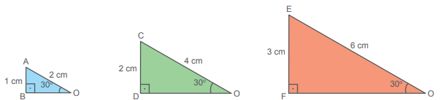
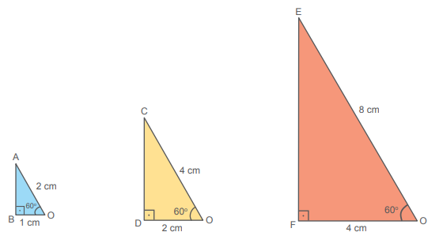

Unidade 6
Trigonometria
150
Avião decolando do Aeroporto da
cidade de Estocolmo, capital da
Suécia.
Brorsson / wikimedia.commons
Avião Airbus A330-200 depois de decolar do Aeroporto Internacional Sheremetyevo.
Moscou (Rússia). Junho, 2011.
51
Quando um avião decola, ele forma com o solo um ângulo α. Conhecendo-se a medida desse ângulo e a altura na qual se encontra a aeronave, é possível determinar, pela trigonometria, a distância retilínea percorrida por ela. Altura de edifícios e relevos, distância entre estrelas e inclinações de rampas são outros exemplos de medidas que podem ser determinadas por esse ramo da Matemática.
1. Em situações como a decolagem de um avião, podemos utilizar o desenho de um triângulo como modelo matemático para determinar essas medidas. A trigonometria estabelece a relação entre as medidas de segmentos e ângulos em um triângulo. Como você representaria, por meio de um desenho, a situação da decolagem de uma aeronave? Explique o triângulo que você utilizou e o que representam as medidas que indicou.
2. No caso da rampa utilizada por cadeirantes, como você poderia representar esta situação por meio de um modelo matemático? Explique.
152
Considere um triângulo retângulo ABC, retângulo em A, em que a é a medida da hipotenusa BC, e b e c são as medidas dos catetos AB e AC, respectivamente.

Em relação ao ângulo α temos que:
- BC é o cateto oposto;
- AC é o cateto adjacente.
Já em relação ao ângulo β, temos que:
- AC é o cateto oposto;
- AB é o cateto adjacente.
Seno de um ângulo
Observe os triângulos retângulos:

- Os triângulos retângulos acima são semelhantes? Explique.
- Determinem a razão entre a medida do cateto oposto ao
ângulo de
30° e a medida da hipotenusa de cada triângulo. O que vocês observaram?
- ∆OAB:
- ∆OCD:
- ∆OEF:
151
A razão entre a medida do cateto oposto ao ângulo de 30º e a medida da hipotenusa recebe um nome especial, ela é chamada de seno de 30º e representa uma razão trigonométrica
O estudo da trigonometria (do grego trigono = triângulo; metria = medida) nos permite resolver situações-problema práticas em que precisamos medir grandes distâncias ou em situações em que há dificuldade de realizar as medições, por exemplo, a altura de um edifício, de uma montanha ou a largura de um rio.
Agora, utilizando a semelhança de triângulos vamos definir seno de um ângulo.
Os triângulos OAB, OCD, OEF, OGH, etc., são triângulos semelhantes pelo caso AA, pois todos os triângulos são retângulos e o ângulo α é comum a todos esses triângulos. Observe:

Temos que: AB
Em que k é uma constante.
Essa razão depende somente do ângulo α e é chamada de seno de α.
Relações trigonométricas no
triângulo
retângulo
sen α = =
152
Cosseno de um ângulo
Agora vamos estudar outra razão trigonométrica importante.
Os triângulos retângulos abaixo são semelhantes e todos têm um ângulo de 60°.

Vamos determinar a razão entre a medida do cateto adjacente ao ângulo de 60° e a medida da hipotenusa de cada triângulo.
- ∆OAB: =
- ∆OCD: = =
- ∆OEF: = =
Note que nos três triângulos a razão é a mesma.
A razão entre a medida do cateto adjacente ao ângulo de 60º e a medida da hipotenusa recebe um nome especial, ela é chamada de cosseno de 60º e também representa uma razão trigonométrica
Agora, utilizando a semelhança de triângulos, vamos definir o cosseno de um ângulo.
Os triângulos OAB, OCD, OEF, OGH, etc., são triângulos semelhantes pelo caso AA, pois todos os triângulos são retângulos e o ângulo α é comum a todos eles. Observe:
153
Portanto:
= = = = ... = k
Em que k é uma constante.
Essa razão depende somente do ângulo α e é chamada de cosseno de α.
cos α = =
Em resumo temos:
sen α =
sen β =
cos α =
cos β =
154
Tangente de um ângulo
Agora estudaremos outra razão trigonométrica em um triângulo retângulo.
Os triângulos retângulos abaixo são semelhantes e todos têm um ângulo de 45°.

Vamos determinar a razão entre a medida do cateto oposto e a medida do cateto adjacente ao ângulo de 45° de cada triângulo.
- ∆OAB: = = 1
- ∆OCD: = = 1
- ∆OEF: = = 1
Note que nos três triângulos a razão é a mesma.
A razão entre a medida do cateto oposto ao ângulo de 45º e a medida do cateto adjacente a este ângulo recebe um nome especial, ela é chamada de tangente de 45º e também representa uma razão trigonométrica.
Agora, utilizando a semelhança de triângulos, vamos definir tangente de um ângulo.
Os triângulos OAB, OCD, OEF, OGH, etc., são semelhantes pelo caso AA, pois todos os triângulos são retângulos e o ângulo α é comum a todos esses triângulos. Observe:
155
Temos que:
= = = = ... = k
Em que k é uma constante.
Essa razão k depende somente do ângulo α e é chamada de tangente de α.
tg α = =
Tabela de razões trigonométricas
Seno, cosseno e tangente são conhecidas como razões trigonométricas. Os valores de cada razão dos ângulos agudos (1° a 89°) podem ser obtidos por meio de uma tabela de razões trigonométricas.
Consulte a tabela da próxima página na resolução das atividades.

156
Tabela de razões trigonométricas
|
Ângulo |
sen |
cos |
tg |
Ângulo |
sen |
cos |
tg |
|
1° |
0,017 |
1,000 |
0,017 |
46° |
0,719 |
0,695 |
1,036 |
|
2° |
0,035 |
0,999 |
0,035 |
47° |
0,731 |
0,682 |
1,072 |
|
3° |
0,052 |
0,999 |
0,052 |
48° |
0,743 |
0,669 |
1,111 |
|
4° |
0,070 |
0,998 |
0,070 |
49° |
0,755 |
0,656 |
1,150 |
|
5° |
0,087 |
0,996 |
0,087 |
50° |
0,766 |
0,643 |
1,192 |
|
6° |
0,105 |
0,995 |
0,105 |
51° |
0,777 |
0,629 |
1,235 |
|
7° |
0,122 |
0,993 |
0,123 |
52° |
0,788 |
0,616 |
1,280 |
|
8° |
0,139 |
0,990 |
0,141 |
53° |
0,799 |
0,602 |
1,327 |
|
9° |
0,156 |
0,988 |
0,158 |
54° |
0,809 |
0,588 |
1,376 |
|
10° |
0,174 |
0,985 |
0,176 |
55° |
0,819 |
0,574 |
1,428 |
|
11° |
0,191 |
0,982 |
0,194 |
56° |
0,829 |
0,559 |
1,483 |
|
12° |
0,208 |
0,978 |
0,213 |
57° |
0,839 |
0,545 |
1,540 |
|
13° |
0,225 |
0,974 |
0,231 |
58° |
0,848 |
0,530 |
1,600 |
|
14° |
0,242 |
0,970 |
0,249 |
59° |
0,857 |
0,515 |
1,664 |
|
15° |
0,259 |
0,966 |
0,268 |
60° |
0,866 |
0,500 |
1,732 |
|
16° |
0,276 |
0,961 |
0,287 |
61° |
0,875 |
0,485 |
1,804 |
|
17° |
0,292 |
0,956 |
0,306 |
62° |
0,883 |
0,469 |
1,881 |
|
18° |
0,309 |
0,951 |
0,325 |
63° |
0,891 |
0,454 |
1,963 |
|
19° |
0,326 |
0,946 |
0,344 |
64° |
0,899 |
0,438 |
2,050 |
|
20° |
0,342 |
0,940 |
0,364 |
65° |
0,906 |
0,423 |
2,145 |
|
21° |
0,358 |
0,934 |
0,384 |
66° |
0,914 |
0,407 |
2,246 |
|
22° |
0,375 |
0,927 |
0,404 |
67° |
0,921 |
0,391 |
2,356 |
|
23° |
0,391 |
0,921 |
0,424 |
68° |
0,927 |
0,375 |
2,475 |
|
24° |
0,407 |
0,914 |
0,445 |
69° |
0,934 |
0,358 |
2,605 |
|
25° |
0,423 |
0,906 |
0,466 |
70° |
0,940 |
0,342 |
2,747 |
|
26° |
0,438 |
0,899 |
0,488 |
71° |
0,946 |
0,326 |
2,904 |
|
27° |
0,454 |
0,891 |
0,510 |
72° |
0,951 |
0,309 |
3,078 |
|
28° |
0,469 |
0,883 |
0,532 |
73° |
0,956 |
0,292 |
3,271 |
|
29° |
0,485 |
0,875 |
0,554 |
74° |
0,961 |
0,276 |
3,487 |
|
30° |
0,500 |
0,866 |
0,577 |
75° |
0,966 |
0,259 |
3,732 |
|
31° |
0,515 |
0,857 |
0,601 |
76° |
0,970 |
0,242 |
4,011 |
|
32° |
0,530 |
0,848 |
0,625 |
77° |
0,974 |
0,225 |
4,331 |
|
33° |
0,545 |
0,839 |
0,649 |
78° |
0,978 |
0,208 |
4,705 |
|
34° |
0,559 |
0,829 |
0,675 |
79° |
0,982 |
0,191 |
5,145 |
|
35° |
0,574 |
0,819 |
0,700 |
80° |
0,985 |
0,174 |
5,671 |
|
36° |
0,588 |
0,809 |
0,727 |
81° |
0,988 |
0,156 |
6,314 |
|
37° |
0,602 |
0,799 |
0,754 |
82° |
0,990 |
0,139 |
7,115 |
|
38° |
0,616 |
0,788 |
0,781 |
83° |
0,993 |
0,122 |
8,144 |
|
39° |
0,629 |
0,777 |
0,810 |
84° |
0,995 |
0,105 |
9,514 |
|
40° |
0,643 |
0,766 |
0,839 |
85° |
0,996 |
0,087 |
11,430 |
|
41° |
0,656 |
0,755 |
0,869 |
86° |
0,998 |
0,070 |
14,301 |
|
42° |
0,669 |
0,743 |
0,900 |
87° |
0,999 |
0,052 |
19,081 |
|
43° |
0,682 |
0,731 |
0,933 |
88° |
0,999 |
0,035 |
28,636 |
|
44° |
0,695 |
0,719 |
0,966 |
89° |
1,000 |
0,017 |
57,290 |
|
45° |
0,707 |
0,707 |
1,000 |
- |
- |
- |
- |
157
Acompanhe, agora, algumas situações que envolvem razões trigonométricas.
Situação 1
Um avião decola de um aeroporto (A) e sobe num ângulo constante de 20°, fazendo seu percurso em linha reta, como mostra a figura. Após quantos quilômetros de deslocamento do aeroporto, o avião atinge a altitude de 8 000 metros?
x → quilômetros percorridos pelo avião até alcançar a altitude de 8 000 metros (corresponde à medida da hipotenusa);
8 000 m = 8 km → altitude do avião (corresponde ao cateto oposto ao ângulo de 20°).
Temos uma relação entre a medida do cateto oposto ao ângulo de 20° e a medida da hipotenusa. Então:
sen 20º =
Consultando a tabela de razões trigonométricas, temos:
sen 20° = 0,342
Assim:
0,342 = x = x ≅ 23,4 km
Logo, após percorrer aproximadamente 23,4 km, mantendo o ângulo de subida de 20°, o avião atingirá a altitude de 8 000 metros.
158
Situação 2
Em um canteiro de obras, foi feita uma rampa de 2 metros de comprimento, usada como acesso de carrinho de mão a um desnível. Essa rampa tem projeção ortogonal de 1,94 metros, conforme a figura:
Determine o ângulo x de inclinação dessa rampa em relação ao solo.
Temos:
- Medida da hipotenusa = 2 m (comprimento da rampa);
- Medida do cateto adjacente ao ângulo x = 1,94 m (projeção da rampa).
Há uma relação entre a medida do cateto adjacente ao ângulo x e a medida da hipotenusa. Então:
cos x =
cos x = 0,97
Consultando a tabela de razão trigonométrica, na coluna dos cossenos, 0,97 corresponde ao ângulo de 14°, ou seja:
cos 14° = 0,97
Portanto:
x = 14°
Logo, o ângulo de inclinação da rampa com o solo é de 14°.
Situação 3
Com auxílio de um teodolito, Luiz observa, a 30 metros de distância, o topo de uma torre. O ângulo fornecido pelo teodolito é de 35°. Qual é a altura total da torre, sabendo-se que Luiz mede 1,80 metros de altura?
H → Altura total da torre
159
H = h + 1,80
Temos uma relação entre a medida do cateto oposto e a do cateto adjacente ao ângulo de 35°, pela qual podemos determinar a medida h. Então:
tg 35º =
Pela tabela, temos que tg 35° = 0,7. Assim:
0,7 =
h = 0,7 ∙ 30
h = 21 m
Como H = h + 1,80, temos:
H = 21 + 1,80
H = 22,8 m
Logo, a altura total da torre é 22,8 metros.
1-De acordo com o triângulo retângulo da figura, em seu caderno, determine as seguintes razões:
- sen β
- cos α
- tg α
- cos β
- sen α
- tg β
- cos 48°
- tg 63°
- cos 54°
- tg 75°
- sen 11°
- Qual é a medida do ângulo cujo cosseno é igual a 0,391?
- Quanto mede o ângulo cujo seno é igual a 0,695?
- Qual é a medida do ângulo cuja tangente é igual a 5,671?
2-Encontre os valores descritos a seguir na tabela de razões trigonométricas.
sen 25°
3-Consulte a tabela de razões trigonométricas para responder ao que se pede.
160
4-Calcule o valor aproximado das medidas desconhecidas, consultando a tabela de razões trigonométricas.
5-Com base no triângulo retângulo a seguir, determine:

- a medida da hipotenusa;
- o valor do seno dos ângulos agudos;
- o valor do cosseno dos ângulos agudos.
6-Calcule a medida aproximada do ângulo θ do triângulo a seguir.

7-Dado o trapézio da figura, determine o valor do cosseno do ângulo β.

8-Determine o cosseno do ângulo α no triângulo retângulo a seguir.
161
9-Leia as informações a seguir.
O Decreto-Lei n.º 10.098, de 2 de dezembro de 2000 é conhecido como Lei da Acessibilidade. A legislação regulamenta um atendimento específico no que se refere a projetos arquitetônicos, urbanísticos, de comunicação, de informação e de transporte coletivo. Além disso, regulamenta a execução de qualquer tipo de obra que tem destinação pública ou coletiva.
A Lei de Acessibilidade garante, por exemplo, que nos projetos arquitetônicos haja rampas para que os cadeirantes tenham acesso aos edifícios.
A Associação Brasileira de Normas Técnicas (ABNT) determina que a inclinação da rampa destinada a cadeirantes seja de, no máximo, 8,33%, e o desnível máximo de cada seguimento da rampa é de 1,50 m.
Na construção civil, é comum indicar a inclinação do ângulo α de uma rampa em porcentagem.
A porcentagem de inclinação i é dada por:
i = . 100
Em que:
- V é a medida da elevação vertical;
- H é a medida horizontal (no caso, a medida da projeção ortogonal da rampa).
Vamos supor que, em uma edificação, haja uma rampa para cadeirantes com V = 0,4 m e H = 8 m.
Nessas condições, responda ao que se pede:
- Essa rampa cumpre as especificações determinadas pela ABNT? Justifique sua resposta.
- A razão de V por H equivale a qual razão trigonométrica?
- Qual é a medida aproximada, em graus, da inclinação dessa rampa?
162
Angela Peres / Agência de Notícias do Acre

Edifício com acesso para cadeirante. Rio Branco, AC, 2010.
Ângulos de 30°, 45° e 60°
Vamos determinar as razões trigonométricas dos ângulos de 30°, 45° e 60°.
Seno, cosseno e tangente de 45°
Vamos verificar o valor do seno, cosseno e tangente do ângulo de 45°.
Em um triângulo retângulo isósceles, cujos ângulos internos medem 90° e 45° e os catetos medem , vamos, primeiramente, determinar a medida (x) da hipotenusa pelo Teorema de Pitágoras.
Logo, a medida da hipotenusa é ℓ√2.
Então:
Seno, cosseno e tangente de 30° e 60°
Por meio de um triângulo equilátero, podemos determinar o seno, o cosseno e a tangente para os ângulos de 30° e 60°.
O triângulo ABC é equilátero, com os lados medindo ℓ e a altura medindo h.
163
Lembre-se de que cada ângulo interno de um triângulo equilátero mede 60o e que, ao traçar a altura h, determina-se também a bissetriz do ângulo.
164

Agora, em uma tabela, vamos organizar os valores encontrados do seno, do cosseno e da tangente de 30°, 45° e 60
|
30° |
45° |
60° |
|
|
Seno |
|
|
|
|
Cosseno |
|
|
|
|
Tangente |
|
1 |
√3 |
- Uma escada está apoiada em uma parede, formando um ângulo de 60° com o solo. Calcule o comprimento da escada, sabendo-se que sua base dista 4 m da parede, como mostra a figura.
2-Duas rodovias retilíneas, A e B, cruzam-se, formando um ângulo de 30°. Um restaurante se localiza na rodovia A, a 8 km do cruzamento. Ao lado dele, passa uma rodovia retilínea C, perpendicular à rodovia B. Determine a distância do restaurante à rodovia B, indo pela C.
3-Em um triângulo retângulo, a hipotenusa mede 12 cm e um dos ângulos mede 60°. Calcule a área desse triângulo.
4-Para medir a altura de um prédio que fica do outro lado da rua de sua casa,
Jonas usou
um
teodolito. Ele tem 1,50 m e, a uma distância de 100 metros do prédio, no mesmo plano, olhou
para seu
ponto
mais alto e o avistou com um ângulo de 60°. Calcule a medida da altura do prédio (em metros)
encontrada por
Jonas, sabendo-se que, em seus cálculos, ele considerou
√3=
1,73.
165
5-Em um triângulo retângulo, um ângulo mede 30° e a hipotenusa, 10√3 cm. Calcule a medida dos catetos.
6-A base maior de um trapézio isósceles mede 40 cm e a base menor, 20 cm. Sendo 45° a medida dos ângulos agudos, determine a medida da altura e o perímetro desse trapézio. (Considere √2 = 1,4)
7-Um avião decola em uma trajetória retilínea, formando com o solo um ângulo de 30°. Qual terá sido a distância percorrida pelo avião ao atingir 2 400 m de altura, mantendo o ângulo de decolagem?
8-Calcule o valor de x.
x =
9-Um observador A vê o topo de um edifício sob um ângulo de 30°. Outro observador, B, vê o mesmo edifício sob um ângulo de 45°. Sabendo-se que os observadores A e B têm 1,70 m de altura, determine a distância do observador B até o edifício. (Considere = 1,73)
10-Um cabo de aço esticado liga o topo de uma torre ao plano, formando com este um ângulo de 60°, como mostra a figura. Determine a altura dessa torre e o comprimento do cabo de aço utilizado.
- (FGV-SP) Na figura, x e y valem respectivamente:
a) 3√3 e 3(3 - √3)
b) 3√3 e 3 - √3
c) 3√3 e 9(1 - √3)
d) √3 e 3 - √3
e) √3 e 9√3
12-Uma rampa plana de 48 m de comprimento faz um ângulo de 30º com o chão. Uma pessoa que sobe a rampa inteira estará a quantos metros do chão?
166
13-O teodolito é um instrumento utilizado para medir ângulos. Com ele, podemos calcular, por exemplo, a altura de um prédio, de uma árvore e de um poste, sem a necessidade de medi-los.
Vamos construir um teodolito para, em seguida, usá-lo com os conhecimentos que você adquiriu sobre trigonometria.
Materiais necessários
- Copo ou pote de plástico redondo com tampa
- Prego (peça a um adulto que o manuseie)
- Canudo de plástico ou 1 tubo de caneta vazio
- Fotocópia de um transferidor de 360º
- Palito de churrasco (cuidado com as pontas ao manuseá-lo)
- Base de papelão (tamanho suficiente para que seja colada a fotocópia do transferidor)
- Pedaço de fita adesiva
- Cola
- Tesoura

Procedimentos
- Cole a fotocópia do transferidor na base de papelão.
- Peça a um adulto que, com um prego (pode-se aquecer a ponta do prego para derreter o plástico, caso este seja muito duro), faça dois furos opostos no copo ou pote.
- Feito isso, insira o palito de churrasco através dos furos do copo ou pote, passando pelo centro dele.
167

Pronto! Agora que você já tem o seu teodolito, sob a orientação do professor, escolha, com seus colegas, algo a ser medido em sua escola, como construções, árvores ou objetos.
Material necessário
- Teodolito
- 1 trena
- 1 calculadora
- Tabela de razões trigonométricas

168
Procedimentos
1.o Posicione o teodolito conforme mostra a figura.
2.o Com o tubo de caneta paralelo ao chão, vá girando o teodolito até avistar o ponto mais alto do lugar a ser medido. Solicite a um colega que o ajude na medição das distâncias necessárias para o cálculo da altura.
3.o Anote no caderno a medida do ângulo encontrado, bem como as demais medidas necessárias.
4.o Para os cálculos, baseie-se na tabela de razões trigonométricas ou use a calculadora. Converse com seu colega sobre como proceder para realizar os cálculos.
14-(Saresp) Suponha que um avião decole sob um ângulo constante de 18º.
Após percorrer 2 000 metros em linha reta, a altura H atingida pelo avião, em metros, é
(Use os valores da tabela dada)
- 1 900
- 640
- 620
- 600